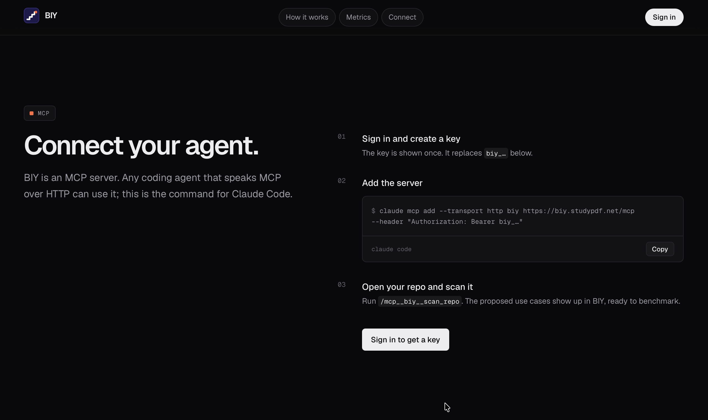

The problem
Leaderboards score someone else’s prompts. The closed model you started with keeps the bill.
BIY
/mcp__biy__scan_repo nothing runs until the cost is confirmed
How a run is scored
StudyPDF · Luis’s product

Concrete suggestions from a run on his product, not a sample app.
Why trust the judge
Where both judges scored the same answer, they disagreed. We flag that. The judge is not the label until a person has looked.
BIY
On your cases.